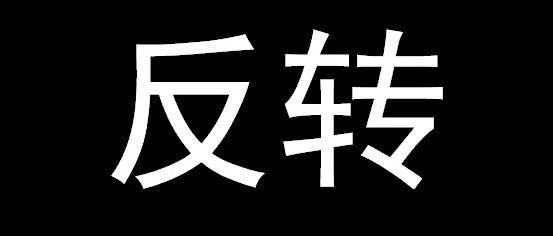

好好的剧情，怎么反转又反转了呢？ | 从18、19日东京地震谈谈城市抗震弹塑性分析的必要性
1、日本当地建筑的破坏预测结果
1月18日，在日本东京东侧发生了一场5.0级地震，震源深度47.9km；次日（1月19日），在东京东北角，又发生了一场4.0级地震，震源深度60km。由于日本是一个多地震国家，抗震工作做得比较好，所以两次地震都没有造成什么结构破坏，我们的城市抗震弹塑性分析程序，基于日本K-Net网络获取的实测地震动，在震后第一时间给出的分析结果如图1、图2所示。

图1 1月18日5.0级地震引起的建筑破坏预测结果（采用日本建筑模型）

图2 1月19日4.0级地震引起的建筑破坏预测结果（采用日本建筑模型）
二、强震记录及分析
如果我们仔细看看观测和分析结果，就会发现很多有趣的问题。比如，我们都知道5级地震释放的能量是4级地震的几十倍。因此，从逻辑上来说，5级地震监测到的地面运动强度应该比4级地震要更强一些。但是，我们把两次地震监测到的地面峰值加速度（PGA）最大的地震记录加以对比，如图3和图4所示。

图3 1月18日5.0级地震记录的PGA最大地面运动（IBR013台站，PGA=0.42 m/s/s）

图4 1月19日4.0级地震记录的PGA最大地面运动（IBR003台站，PGA=0.74 m/s/s）
哇，剧情反转了！4.0级地震记录到的最大PGA几乎是5.0级地震的2倍！由于目前还不清楚断层破裂机制和场地的情况，我们也不好说是不是断层距或者其他效应的影响。但是因为地震发生在东京附近，周边的台站很密集（见图1、图2），所以距离因素未必是决定性因素。如果这时有一个认真学习的同学跑来问我说：“老师老师，您不是说地震震级越大、深度越浅，地面运动越强么？怎么这个剧情和你课上说得不一样啊”。我估计只能满头大汗的说：只能说地震确实非常复杂，老师说的是一般规律，具体地震需要具体分析。
三、地震动破坏力分析（以芜湖农村为例）
如果剧情只这样反转一次，其实还没什么大不了的，精彩的还在后面。大家现在都已经见多识广了，但凡网上有什么热点新闻出现，吃瓜群众都已经不着急站队了，总要等一等看看过两天事件是否会反转。同样，前文得出的4.0级地震引起的地面运动比5.0级地震还强的结论，是基于地面峰值加速度PGA的大小给出的。学过结构动力学都知道，地震的破坏能力，不仅和地震动的幅值有关，还和频谱、持时等多个因素有关，所以，图3、图4里面两个地震动谁破坏力更强，我们不能仅仅看一个PGA。
于是我们就请出我们的城市抗震弹塑性分析方法，来看看到底谁的破坏力更强。由于日本的建筑抗震能力太高，这两个地震动都不能引起日本建筑物的破坏，所以我们换个分析对象。假设这个地震发生在我可爱的家乡，江城芜湖的某个农村，看看会导致什么后果。当把安徽芜湖（6度设防区）农村建筑模型代入计算后，得到两次地震的破坏分布如图5、6所示。

图5 1月18日5.0级地震对芜湖农村建筑造成的破坏

图6 1月19日4.0级地震对芜湖农村建筑造成的破坏
哈哈，剧情又反转了。5.0级地震中最强的地面运动（图3，IBR013台站记录）足以把芜湖农村约20%的建筑震到中度破坏。图5中，1月18日5.0级地震共有6个台站记录可以造成芜湖农村50%以上的建筑达到轻度以上破坏。而在图6中，1月19日4.0级地震只有一个台站记录可以导致超过50%的建筑达到轻度破坏。并且，图4中威风凛凛的IBR003记录，只能导致37%的建筑达到轻度破坏，比起图3中的IBR013记录，这次它成了战五渣了。
四、总结
这次分析的结果从道理上来说，其实一点都不复杂，并没有超出我们结构动力学和地震工程学的基本原理，也和我们此前多次讨论的结论一致。但是，如果没有科学的方法作为支持，在地震后应急的紧张环境中，谁能保证一定会从概念上把所有的因素考虑得都很全面呢？具体说来，如果在震后应急中，我们提交的评估结果，先反转一次，再反转一次，我们可以想像做决策的负责人脸色会有多么难看。
最近张小龙就微信做了一个演讲，讲得很好，很多人在转载，其演讲的核心是两个字：”简单”。其实这个理念在我们震损评估上一样适用。采用城市抗震弹塑性分析，把实测的地震动输入到当地建筑的力学模型里面去，求解牛顿运动方程得到建筑的破坏评估结果，原理非常简单，任何一个学过结构动力学课程的学生都可以理解这个工作。比传统方法唯一增加的工作量就是结构动力学方程求解带来的巨大计算工作量。而在这个计算能力飞速发展的时代，这个工作交给计算机来运行一点都不困难。我这次精确测算了一下，1月18日、19日两次地震分析，用腾讯云服务器，得到图1、图2这样的结果，计算总开销是：金钱：七块两毛九分；时间：11分钟。
另外最近我们给这个震损分析工作起了一个名字：Real-time Earthquake Damage Assessment using City-scale Time history analysis，简称“RED-ACT”。现阶段RED-ACT还是刚刚起步，还有很多问题需要进一步研究和解决，也欢迎国内外对这个问题感兴趣的专家一起来研究、发展、应用。
---------End--------
相关研究
长按识别二维码，关注我们的科研动态